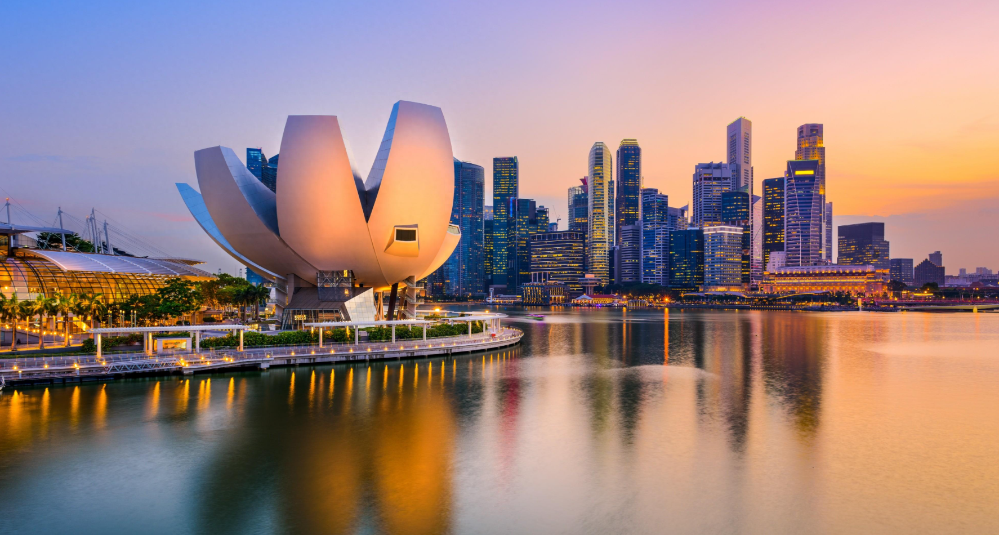
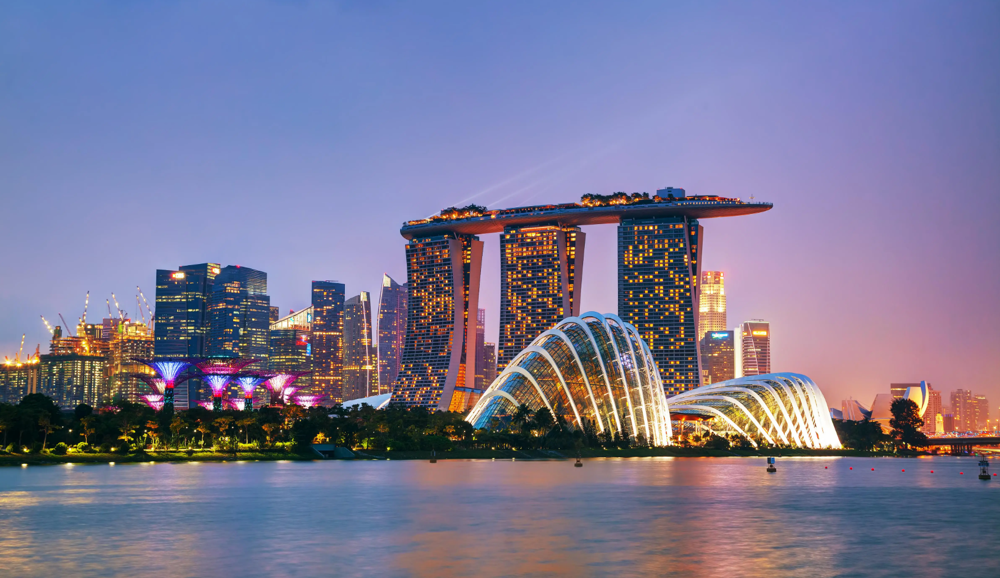

- 
- 
-

<
>
Singapore is an island nation in Southeast Asia, located at the southern tip of the Malay Peninsula, and one of the most prosperous countries in the world. Singapore is renowned for its efficient urban planning, multicultural integration, and beautiful garden city landscape.
Singapore's history dates back to the 14th century, with modern Singapore founded by Sir Stamford Raffles in 1819. In 1965, Singapore gained independence from Malaysia. Within just a few decades, Singapore transformed from a resource-scarce island into one of Asia's Four Little Dragons.
Singapore is a multiracial, multicultural nation with major ethnic groups including Chinese, Malays, Indians and Eurasians. The official languages are English, Chinese, Malay and Tamil. Singaporean cuisine blends Chinese, Malay, Indian and other flavors, making it a true food paradise.
Iconic attractions include Merlion Park, Marina Bay Sands, Sentosa Island, and the Botanic Gardens. Singapore is also one of the world's most important financial centers with the busiest port globally.
Singapore's most famous landmark, the Merlion statue stands 8.6 meters tall and weighs 70 tons, symbolizing Singapore. Located at Marina Bay, it's a must-visit spot for tourists.
Singapore's most luxurious integrated resort, featuring hotels, casinos, shopping malls and museums. The most striking feature is the infinity pool on the rooftop.
A famous resort island with Universal Studios, S.E.A. Aquarium, beaches and other entertainment facilities. The island also has historical sites like Fort Siloso.
A UNESCO World Heritage Site with over 10,000 plant species. The National Orchid Garden houses thousands of orchid varieties, including Singapore's national flower.
Legend has it that in the 14th century, a Malay prince encountered a storm at sea and drifted to Singapore Island. Upon landing, he saw a mystical creature with a lion's head and fish body.
In the 1970s, Marina Bay was still open water. Through massive land reclamation, Singaporeans created this prime location with wisdom and hard work.
Singapore's national flower was carefully cultivated by botanists. In 1963, just before independence, this beautiful hybrid orchid was chosen as the national flower.
We appreciate your feedback.